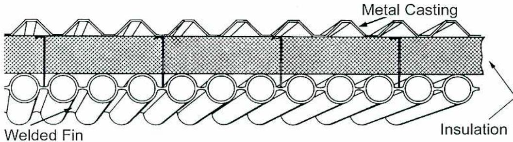
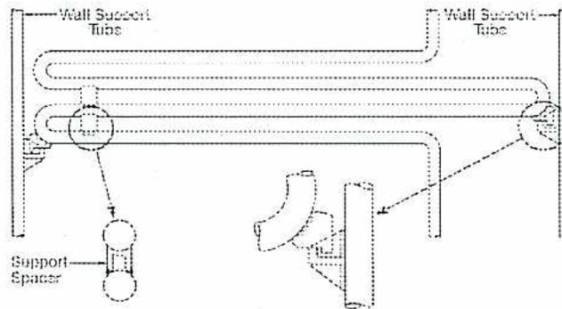
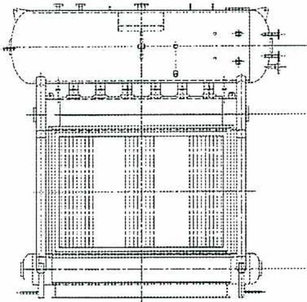
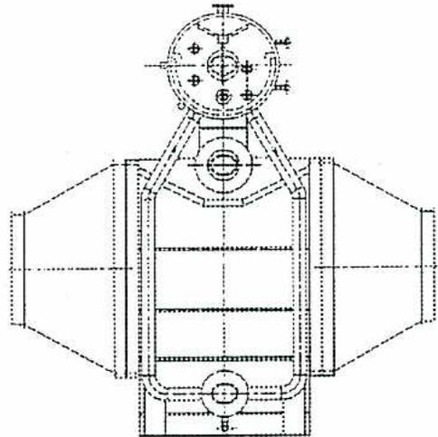
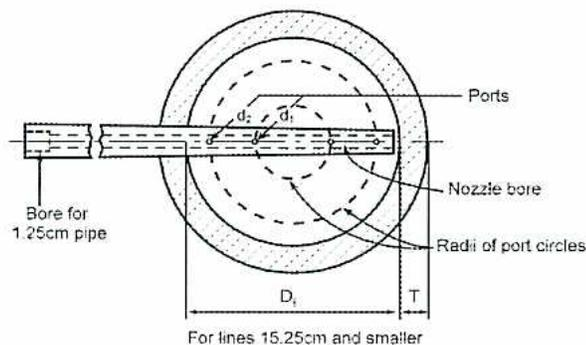
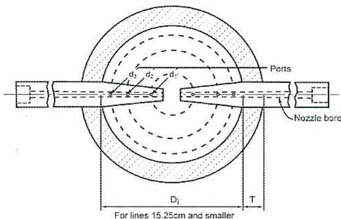

The major steps in the field erection of a steam generator are:
4. Sketch and describe membrane wall construction of a boiler wall. Include insulation and lagging in the diagram.

The diagram must include tubes, membranes or fins, insulation and metal cladding or casing
5. List the effects the type of fuel has on the design of a steam generator furnace. Why is a gas-fired steam generator physically smaller than a coal-fired unit of the same output?
The type of fuel affects the size of a steam generator furnace. Furnace size is based upon the heat release of the fuel and the time taken for complete combustion of the fuel. The fuel also determines the need for equipment such as soot blowers to keep the heating surfaces clean.
Designing furnaces for gas firing is similar to oil firing, except that gas firing results in lower localized heat absorption rates. This means that the furnace temperature is more uniform than with oil. Therefore, the furnace can be slightly smaller in volume than an oil-fired furnace. Both oil and gas furnaces are smaller than coal fired furnaces, which require larger volumes. The time taken to combust solid fuels is larger.
6. Sketch and describe the ducting arrangement of an air preheater including a bypass. Explain the purpose of the bypass?
![Diagram of an air preheater ducting arrangement. It shows a central rectangular block representing the preheater coils. Air enters from the left, labeled 'Air Inlet', and is split into two paths: one through the coils and another through a 'Bypass' duct above. The air exits on the right, labeled 'Air Outlet'. Gas enters from the bottom, labeled 'Gas Inlet', and flows upwards through the coils, exiting at the top labeled 'Gas Outlet'. Text at the bottom indicates 'Gas Upflow' and 'Air Counterflow, Two Pass'.](0a12cc47f3c5ca76c39d5943ba8661bd_img.jpg)
9. Explain the difference between controlled circulation and once-through circulation in a steam generator.
Forced circulation boilers can be divided into two general classes: controlled circulation or recirculating boilers and once-through boilers. The main feature of a controlled circulation boiler is a recirculating pump, which is used to provide circulation.
In the once-through boiler, feedwater is pumped into the tubes and leaves the tubes as superheated steam. As this feedwater passes through the tubes it is first heated to saturation temperature and then transformed into steam. This steam is then superheated as it passes through the remainder of each tube.
10. Sketch a method of supporting a horizontal superheater bundle in vertical steam generator ducting.

The diagram shows a cross-sectional view of a horizontal superheater bundle within a vertical duct. Two vertical 'Wall Support Tubes' are positioned on the left and right sides, connected to the top header. The horizontal tubes of the bundle are supported by these wall tubes via a 'Support Spacer' at the bottom. A 'Support Bracket' is shown at the top, securing the bundle to the wall support tubes. Arrows point from the labels to the corresponding parts of the diagram.
11. Explain the difference between a direct contact attemperator and a surface attemperator.
There are two types of attemperators (desuperheaters) used: the surface type where the cooling medium is separated from the steam by a tube surface, and the direct contact type where the cooling medium is mixed with, and comes in direct contact with, the steam.
Lower combustion temperatures produce lower emissions of NO x , nitrogen oxides. Fluidized bed combustion can take place at temperatures ranging from 800°C to 900°C instead of standard combustion temperatures of 1600°C to 1900°C for pulverized coal and oil firing.

A cross-sectional diagram of a watertube boiler. It shows a large horizontal steam drum at the top and a smaller horizontal mud drum at the bottom. A series of vertical water tubes connect the two drums. The central area between the tubes is the furnace or combustion chamber. Various pipes and fittings are shown entering and exiting the drums.
Section "A-A"

A side view diagram of a watertube boiler. It shows the vertical arrangement of the steam drum, mud drum, and water tubes. The furnace is shown as a central vertical section. On the left and right sides of the furnace, there are inclined sections representing the boiler's casing or ductwork. Various pipes and fittings are visible on the top and bottom of the main assembly.
Side View
The answer should include:
the pressure of steam required for deaeration and feedwater heating. This steam replaces extraction steam used for feedwater heating in conventional steam plant cycles.
Cogeneration cycles are similar to combined cycles. In cogeneration, the heat recovery system is used to produce steam for process needs or for space heating. Extra steam can be used to generate electricity.
6. Why is the design of waterwalls in supercritical boilers of special concern? Briefly describe two designs.
The major design concern in building supercritical boilers is the once-through operation of the furnace tubing. The mass flow through the furnace tubes is much lower than in a furnace with circulation. The mass flow must still be high enough to prevent overheating and departure from nucleate boiling (DNB) while generating steam at sub critical pressures. At normal loads and at supercritical pressures the mass flow must be high enough to prevent overheating of tube metal and variations in steam exit temperatures. The two common methods of overcoming this problem are spiral furnace wall tubes, and vertical tubes with rifling inside the tubes.
With a spiral-wound furnace design, the total number of tubes that encase the furnace is reduced. The tubes are arranged at an angle and spiraled around the furnace. The pitch or spacing between the tubes remains the same as in the vertical design.
Vertical furnace walls are also used in supercritical boilers. They have rifled (internally ribbed) tubing to avoid overheating and DNB at lower pressures. The vertical tube design has a circulation pump for low rates and start up. To ensure the circulation through each tube is equal, the tubes are fitted with orifices to equally distribute the flow.
7. Describe the safety hazards involved in firing a black liquor steam generator.
If water contacts molten smelt, it causes a violent explosion. It is not a chemical reaction but a physical reaction. It is a result of gases expanding very quickly and violently. They produce a shock wave type of reaction. Tube leaks onto the smelt bed cause a dangerous explosion. If a furnace tube leak is detected, many boilers have an emergency drain system to drain the boiler to just above the furnace floor.
If the black liquor is too weak, it can also cause an explosion. The black liquor furnace is designed with added structural strength in case of explosion.
New steam generators or steam generators that have undergone major repairs or have been out of service for an extended period of time, are subjected to a hydrostatic test of 1.5 times the design pressure. The water used for the test should be at a temperature no lower than the surrounding atmosphere and in no case lower than 21°C. This is necessary to prevent condensation forming on the outside of the tubes and plates that makes the detection of leaks difficult. The water temperature, however, must not be so high as to prohibit touching and close inspection of the various parts.
Good quality (mineral free) water is used to avoid corrosion and fouling problems. Any sections of the steam generator, which are drained immediately after the test, can be filled with clear, filtered water. Non-drainable parts are filled with distilled or demineralised water adjusted to neutral pH and chemically treated to remove oxygen.
When filling the various parts of the steam generator, ensure all air is vented otherwise a dangerous condition develops. Air trapped by the water compresses and, in the event of a leak, the air expands producing a hazardous condition. A guide to the effectiveness of the air venting during the filling of the steam generating unit is the time taken to raise the pressure after the steam generating unit shows full. An excessive time taken to raise pressure indicates that the test pump is compressing air trapped in the boiler.
For a hydrostatic test at 1½ times the design pressure, gags (Fig.1) must be used to prevent safety valves from opening. Blank flanges may be used in the case of flanged valves. To prevent excessive pressure on the safety valve spindle and to protect the valve seating surfaces, the gag should not be applied until the pressure has reached at least 80% of the valve set pressure. The gags and blank flanges should be removed after completion of the test. Instrumentation that could be damaged by the hydrostatic pressure should also be isolated until the hydrostatic test is completed.
After satisfactory completion of the hydrostatic test the steam generator is drained. The vents must be opened to aid the draining of the steam generator.
The drum internals, if removed, must be reinstalled. After installation of the drum internals, the drums are inspected again for debris. If there is any possibility that something fell into one of the tubes, then all the tubes must be proved clear using the methods described previously. After inspection of the drums, the manhole covers are replaced using new gaskets.
The purpose of the boil out is to remove any oil, grease, or other contaminating materials from the internal surfaces of the waterside of the boiler. Chemicals are added to the boiler water and the steam pressure is raised and maintained in the boiler for a predetermined period of time. This dissolves any deposits present on the drum and tube surfaces.
For example, add the following chemicals for each 45 000 L of boiler water:
Note: When working with these chemicals, be sure to follow all safety precautions and wear the appropriate safety equipment. If you are not familiar with these chemicals, consult the MSDS.
The following steps are required to complete the boil out of the steam generator.
4. Describe the shut down procedure for a steam generator you are familiar with.
Before the steam generator is taken out of service, follow these steps:
Follow these steps to safely shut down a steam generator:
If the repairs are external to the steam generator, the water volume need not be blown down unless previous tests show that the chemical concentration is unsatisfactory. If there is an ample reserve of makeup, it may be desirable to change the water completely.
5. Describe how to lay up a steam generator for long period of time. List activities carried out while the steam generator is shut down.
For boilers that will be out of service and exposed to freezing ambient temperatures, dry storage is used. The cleaned boiler must be thoroughly dried, because any moisture left on the metal surfaces promotes corrosion. The drum, superheater, economizer, and other waterside vents are opened to drain the boiler completely. A small flame is used to evaporate any water left in the boiler. The source of the small flame can be from one of the burners, or a small portable heater can be placed in the bottom of the furnace. The vapours at the drum vent are analysed for moisture content. The vapour analysis indicates if the boiler waterside is moisture free. The flue gas temperature in the stack should not exceed 200°C or the temperature recommended by the steam generator manufacture.
After drying, the entry of any moisture or air into the waterside of the steam generator must be prevented. Moisture absorbing material, such as quicklime at the rate of 1 kg for 1 m 3 of boiler volume or silica gel at the rate of 3 kg for 1 m 3 of boiler volume, can be placed on trays inside the drums to absorb moisture from the air. The manholes and all connections on the boiler should be tightly closed. If it is readily available, a supply of an inert gas, such as nitrogen, can be connected to the drum vent to provide a positive pressure. The nitrogen pressure should be maintained at approximately 35 kPa. Warning signs and tags must be attached stating that the boiler is stored under nitrogen pressure.
Less time and less maintenance personnel are required. Even a large unit can usually be cleaned in less than 36 hours.
Inaccessible areas can readily be cleaned and the cleaning is more thorough than mechanical cleaning.
With chemical cleaning in mind, boilers can be designed without special provisions for mechanical cleaning accessibility.
An arrangement for chemical cleaning of a conventional type boiler by the soaking method appears in Fig. 6
To prepare the unit for soaking, thermocouples should be installed at the steam drum, at the center of each furnace wall, and at one of the lower furnace wall headers. The unit is then filled with demineralized water and brought up to a temperature of 77 - 82°C by means of pilot burners or light firing. The firing is then stopped and the unit is drained and the superheater backfilled with treated condensate or demineralized water to prevent acid vapours from entering during the cleaning. The drum gage glass is replaced with a plastic tube gage. Then, referring to Fig. 3, the vents 5 and valve 1 are opened and the filling pump started. Heating steam is admitted through valve 6 to keep the water flowing to the unit at 77 - 82°C and the inhibited acid is admitted through valve 7. The amount of acid entering is adjusted to give the desired solution strength as sampled at valve 9. When the unit is filled to the normal operating level, the filling pump, heating system, and acid feed are stopped. Valves 2 and 8 are closed and the drum vents 5 are left open. The unit is then allowed to soak for the required period of time.
If the pH is satisfactory then the next step is to neutralize the surfaces. The temporary gage is replaced by the regular drum level gage and the unit is filled to slightly below operating level with a solution of 10 kg of soda ash to 100 kg water. The unit is then fired and boiled out for 4 to 6 hours. For boilers operating at 1400 kpa or less, the boil-out pressure is operating pressure. For boilers operating at above 1400 kpa, the boil-out pressure is the higher of 1400 kpa or one half the operating pressure although it is not necessary to exceed 4200 Kpa.
After the boil-out the unit is shut down and drained without using nitrogen pressure and while the unit is still hot it is filled with demineralized water containing 0.5% sodium nitrite to prevent rusting, until the drum vents overflow. The unit is drained again after one hour. If there is any evidence of loose deposits remaining in the unit then the headers and tubes should be thoroughly flushed out.
Note – The student could use the circulation method for the answer as well.
The purpose of this test is to prove the boiler is tight under internal pressure. The test will be carried out by the boiler manufacturer (or repair agency in the case of a boiler repair job) to the satisfaction of an authorized inspector. This authorized person will be a provincial government boiler inspector, an insurance company boiler inspector, or a qualified employee of the company purchasing the boiler, depending upon the law in the province concerned.
Boilers that have undergone pressure part repairs or have been out of service for an extended period of time shall be subjected to a hydrostatic test. If any doubt exists that all tubes are clear of any obstruction, each individual tube will have to be proved to be clear of obstruction, before the hydrostatic test can be carried out. To prove each tube clear will require someone to enter the boiler drum(s) so therefore a vessel entry permit should be used, for the safety of the person(s) inside the drum(s).
Note: - Before any operations personnel begin to prepare the boiler for the hydrostatic test, ensure that all work permits have been returned to operations and that all tools have been removed from the boiler.
Straight tubes can be sighted through with a portable light. Bent tubes can be proved clear of obstruction by passing a wooden ball through. (Compressed air can be used to blow the ball through tubes, which it will not roll through.) Alternatively a fish wire, then a rope and then a canvas plug can be pulled through. Whichever method is used, it is essential that all tubes be proved clear, and then protected against the possibility of any debris falling into the tubes until the boiler is closed up.
When all tubes have been probed, and all headers and drums have been cleaned as well as possible by mechanical means (this includes use of the mechanical tube
Any deposits still adhering to the surfaces after washing down must be removed by mechanical cleaning or chemical cleaning. This will leave a clean metal surface, which the inspector can easily examine.
Note: - In regard to determining the need for cleaning of the internal surfaces, this can be done by visual inspection in the case of some boiler designs. However, in the case of the modern high pressure boiler having involved water circulation circuits and all-welded construction, adequate visual inspection may not be possible. In these cases it may be necessary to cut out a representative tube section in order to determine the amount of deposit present. Alternatively, a representative tube can be cleaned with a mechanical cleaner and the amount of deposit so removed can be measured by weighing.
When examining the water side surfaces, the inspector will be looking for signs of corrosion, pitting, and cracking of the metal. Cracks may appear in ligaments between tube holes. Stays must be checked for looseness and cracking at the fastened ends. Particular attention is paid to drum connections such as safety valves and steam outlet connections and to manhole and handhole openings. All drum welds are examined closely.
The plugs in the water column connections should be removed to allow inspection for scale or other deposits.
Drum internals must be closely inspected to see that all baffling and other steam separating equipment are positioned correctly and joints are tight. If baffles, plates, or separators are removed for inspection they should be marked to ensure proper reassembly.
Blow-off connections should be inspected for corrosion and weakness where they connect with the boiler. These connections must be supported and be able to expand and contract without producing excessive stress on the boiler. All other piping connecting to the boiler must be similarly checked.
Pressure gages should be tested and calibrated if necessary.
All other boiler fittings should be examined for plugged connections and for proper operation.
After the water side inspection has been completed, the inspector may wish to have the boiler closed up and a hydrostatic test carried out.
Prior to an extended shutdown, engineers assist with the shutdown planning, parts and materials procurement, and labour scheduling. During the shutdown the on-site engineering staff does engineering that arises from the inspections or repair jobs. The engineering staff has day to day communication to the tradesmen and operations personnel, updating them on the status of all work requiring engineering such as repairs and capital projects.
If a boiler tube repair is required, then the engineering staff must ensure the replacement tube is made of the correct material, and is designed for the correct operating pressure.
Gamma radiation exposure devices and X-ray film are used to determine the wall thickness of boiler tubes, as well as the condition of various welded joints in boiler piping. The film is wrapped around the area to be x-rayed, and then a picture is taken of the tube or weld.
This is the most common method used to inspect the condition of the various welded joints in a boiler.
This method uses high frequency sound along with sophisticated transducers and instrumentation to determine the wall thickness of the boiler tubes. The speed at which the sound waves travel across a tube wall is related to wall thickness
The advantages of this method are that it does not need film, the results are immediate, and there is no danger to personnel in the area.
All mechanical equipment emits heat in the form of electromagnetic radiation. Infrared cameras, which are sensitive to thermal radiation, can detect and measure the temperature differences between surfaces. Abnormal or unexpected thermal patterns on a boiler tube is indicative of a problem with the tube – a problem that could eventually lead to a tube failure. If a hot spot is detected by the infrared camera, that may be an indication of poor circulation through the tube, which is caused by a build-up of scale in the tube. Another reason for the hot spot could be corrosion or erosion of the tube.
Liquid penetrant testing is used to detect surface cracking. It is not dependant on the magnetic property of the component or its shape. LP testing detects surface flaws by capillary action of liquid dye penetrant. It is only effective if part of the flaw is touching the surface. The penetrants are portable and easy to transport into
The basic data includes:
$$ Q_1 = 2000 \text{ L/min} \quad P_1 = 500 \text{ kPa} \quad \text{kW}_1 = 20 $$
$$ N_1 = 1200 \text{ rev/min} \quad N_2 = 1500 \text{ rev/min} $$
Capacity \( Q_2 \)
$$ \frac{Q_1}{Q_2} = \frac{N_1}{N_2} \qquad \frac{2000}{Q_2} = \frac{1200}{1500} $$
$$ Q_2 = \frac{2000 \times 1500}{1200} = 2500 \text{ L/min (Ans.)} $$
Pressure \( P_2 \)
$$ \frac{P_1}{P_2} = \frac{N_1^2}{N_2^2} \qquad \frac{500}{P_2} = \frac{1200^2}{1500^2} $$
$$ P_2 = \frac{500 \times 1500^2}{1200^2} = 781.25 \text{ kPa (Ans.)} $$
Power = \( \text{kW}_2 \)
$$ \frac{\text{kW}_1}{\text{kW}_2} = \frac{N_1^3}{N_2^3} \qquad \frac{20}{\text{kW}_2} = \frac{1200^3}{1500^3} $$
$$ \text{kW}_2 = \frac{20 \times 1500^3}{1200^3} = 39.06 \text{ kW (Ans.)} $$
$$ h_2 = h_1 \times (1)^2 \times (1.22)^2 $$
$$ h_2 = 50 \times (1) \times (1.49) $$
$$ h_2 = 50 \times (1.49) $$
$$ h_2 = 74.5 \text{ m} $$
$$ \text{kW}_2 = \text{kW}_1 \times \left(\frac{n_2}{n_1}\right)^3 \times \left(\frac{D_2}{D_1}\right)^3 $$
$$ \text{kW}_2 = 18 \times \left(\frac{1800}{1800}\right)^3 \times \left(\frac{22}{18}\right)^3 $$
$$ \text{kW}_2 = 18 \times (1)^3 \times (1.22)^3 $$
$$ \text{kW}_2 = 18 \times (1.816) $$
$$ \text{kW}_2 = 32.69 \text{ kW (Ans.)} $$
4. Describe the method of aligning and grouting-in of a centrifugal pump which has been delivered to the site with the driving motor separate from the pump and base plate.
If the pump driver is delivered separately to the site and is to be mounted on the pump base plate in the field, then the base plate with the pump is set on the foundation and levelled with shims leaving a space for grouting. The driver is then placed on the base plate so that the coupling faces are the correct distance apart. The pump and driver should then be aligned and the anchor bolt holes for the driver marked off on the base plate. The driver is now removed and the bolt holes drilled and tapped. The driver is then replaced on the base plate, the bolts are inserted and tightened after re-aligning the driver and pump.
To properly align the pump and motor, the coupling faces should be spaced far enough apart so that they do not contact each other when the driver rotor is pushed toward the pump as far as it will go. Also space must be allowed for eventual wear of the thrust bearings.
To check the alignment of the two shafts, the anchor nuts have to be tightened against the base.
A check for angular alignment is made by inserting a taper gage between the coupling faces at four points spaced at 90 degree intervals around the coupling. The coupling faces should be the same distance apart at all points for correct angular alignment.
tapered hole through the pump base and base plate. This keeps the pump securely located. They are often made with a threaded top so that a nut can be screwed down on the dowel to pull it from the tapered hole.
The alignment should be checked after repairs, new installations, or even earthquakes.
5. (a) List 5 items that a plant operator should check on shift.
Any 5 from the following list will do.
(b) List some of the maintenance activities that need to be done monthly, quarterly, semi-annually, and annually.
Monthly - check of the temperature of each bearing should be made with a thermometer. Ball or roller bearings that are running hot may be over lubricated and this can be remedied by removing some lubricant. Hot sleeve bearings may be the result of dirty oil or insufficient oil. If this is the case, more oil may need to be added, or the oil should be changed.
Quarterly - intervals sleeve bearings should be dismantled, cleaned and the oil changed, provided the shut down of the pump will not unduly impact plant operations. Grease packed bearings should be checked for contamination of the grease by the pumped liquid and if contamination is present, the bearing should be flushed out, cleaned and repacked. All bearings should be measured for wear.
Semi-annually - Stuffing box leakage should be carefully measured and the packing renewed if necessary. Shaft sleeves should be checked for scoring and wear. If shaft sleeves are not worn but packing wear is excessive, this is an indication of a bent shaft, or worn bearings, or an out of balance rotor.
All instrumentation should be recalibrated.
![Schematic diagram of a boiler feedwater (BFW) system. The diagram shows a STORAGE VESSEL (DEAERATOR) at the top right connected via a GATE VALVE to a MULTIPLE PRESSURE REDUCING ORIFICE. Below this is a REGULATION CONTROL VALVE and a GATE VALVE. A FOUR-WAY AIR SOLENOID VALVE is connected to the line between the regulation control valve and the GATE VALVE. The line continues to a BOILER on the left, passing through a GATE OR CONTROL VALVE and a CHECK VALVE. A BFW PUMP is located on the line between the check valve and the boiler. A SENSING ORIFICE and an FIC (Flow Indicator Controller) are also shown on the line between the pump and the boiler.](2763901b7a1fd1b5d704cdc450d12ed0_img.jpg)
(b) Name the other types of control for a large centrifugal pump.
7. (a) What are the two main types of seals that are used on centrifugal pumps.
Stuffing boxes and mechanical seals.
(b) What is the difference between a Rotating mechanical seal and a Stationary mechanical seal?
With a rotating mechanical seal the shell containing the sealing ring and springs is attached to the pump shaft, and the mating ring is held stationary within the pump casing. With a stationary mechanical seal the mating ring is attached to the pump shaft, and the shell containing the sealing ring and springs is held stationary in the pump housing.
This type of seal uses a liquid ring to provide the shaft sealing for the pump.
An additional type of impellor, called an expellor, is mounted on the shaft in the sealing space. As the shaft rotates, the expellor removes the fluid being pumped from the sealing chamber, and creates a liquid ring. This liquid ring serves as a seal and prevents shaft leakage. In the shut down mode, the liquid being pumped fills the sealing space, and its inherent pressure forces a disk against the sleeve on the shaft, thereby preventing the seal from leaking when the pump is shut down.
When the pump is started again, the expellor pumps the liquid out of the sealing chamber and creates a liquid sealing ring again. The sealing disk is no longer pressed against the sleeve, and rotates without any contact.
The water may have come in contact with copper bearing minerals, or runoff from copper production. Copper in plant water systems may be a product of corrosion of copper or copper alloy pipe from fittings inside the plant piping. The copper may be added deliberately to water supply reservoirs for algae control. It is objectionable in plant waters because it is corrosive to aluminum.
Water becomes contaminated with lead from metallurgical wastes or from lead containing poisons such as arsenic. Lead concentrations must be kept below 0.05 mg/l in drinking water. It is removed from wastewaters being discharged. It is most easily removed by filtration.
Phosphate compounds are widely used in fertilizers and detergents. Silt from agricultural runoff and municipal wastewaters contain phosphate compounds. Phosphate can also be precipitated at a pH over 10.0 with alum, sodium aluminate, or ferric chloride. Phosphates increase algae growths in cooling water systems that requires more chemical use to control the microbiological activity.
Zinc is present in water because of discharges from mining or metallurgical operations. It also appears because of corrosion of galvanized steel piping. Zinc is removed by lime softening or by cation exchange.
Chromium finds its way into water supplies from cooling tower blowdowns and chrome plating operations. It can be reduced by filtration and removed by anion exchange. It is a heavy metal and cannot be discharged into lakes or streams.
Mercury is produced in water by wastes from caustic production and by the leaching of coal ashes. It must be restricted to very low levels in potable water supplies (below 0.002 mg/l). It can be removed by reduction and filtration.


4. List the dissolved gases that are present in raw water. Why are they removed to make the water suitable for boiler feedwater?
The dissolved gases removed in the preparation of boiler feedwater are oxygen, carbon dioxide and ammonia.
The time taken to settle particles depends on the following variables:
Density of the particle: the more dense the particle, the faster it settles.
Shape of the particle: round particles tend to settle faster than odd-shaped particles.
Size of the particle: in general, the larger the particle, the quicker it settles, other factors being constant. This is true for particles falling in dense, viscous, and friction-prone water.
Viscosity: (the frictional resistance of water): the colder the water, the more viscous it is, and the more friction it offers to falling particles, thus slowing the settling process.
Particles in water have a charge associated with them. It is predominantly a negative charge. Coagulation is the process of neutralizing these charges. When a coagulant mixes with the inlet water, it neutralizes the charges and the particles clump together to form tiny visible particles called microfloc. Once the charges have been neutralized, the particles no longer repel each other. They are then brought together into larger particles for flocculation and sedimentation.
Flocculation is the process of bringing together coagulated particles to form larger particles or floc. Flocculation begins when neutralized or entrapped particles start colliding and growing in size. The larger the floc, the faster it settles out of solution.
The flocculation process is aided or speeded up by the addition of water-soluble organic polymers or flocculants. They belong to the chemical class of polyelectrolytes. Because coagulants form macrofloc from microfloc, they are considered coagulant aids .
Clarification refers to increasing the clarity of the water. This is accomplished by removing the suspended solids from the water. Processes such as flocculation coagulation and filtration are used. These processes are limited to improving the clarity of the water. No softening or reduction in dissolved ions occurs.
6. Why is it necessary to keep oil out of cooling tower water? What problems will oil cause in boiler water?
Oil in cooling water systems will form sludge in the cooling water basin. The oil may also deposit in cooling water exchangers in the shell side. It is a more serious problem if deposits form on the inside or outside of heat exchanger tubes.
Corrosion will occur under these deposits. Eventually, the corrosion can result in tube leaks.
Oil should be kept out of boiler water. It causes boiler water to foam, resulting in poor steam quality from carryover (carryover of boiler water with the steam). The oil will also deposit in the tubes and form sludge and deposits.
7. Explain why microfiltration is often used upstream of reverse osmosis.
Often microfiltration is used upstream of reverse osmosis to protect the RO
membranes from particulates. Reverse osmosis membranes are susceptible to clogging unless the water being processed is free of particulates.
8. Sketch a demineralizer train consisting of a strong base cation, a degasifier, and a strong base anion exchanger. List the ions that are removed in each of the three steps.
![A schematic diagram of a demineralizer train. Raw Water enters from the top left into a Cation Exchanger tank. Acid Regenerant is added to the bottom left of this tank. The output from the bottom of the Cation Exchanger goes into a De-gasifier tank. The output from the bottom of the De-gasifier goes into a Clearwell tank. From the Clearwell, the water is pumped into an Anion Exchanger tank. Caustic Soda Regenerant is added to the bottom right of the Anion Exchanger. The final output from the bottom of the Anion Exchanger is labeled 'To Service'.](e1a0d046fbe7f28f5e93a47091851747_img.jpg)
![Two diagrams illustrating osmosis and reverse osmosis. The left diagram, labeled 'OSMOSIS', shows a semi-permeable membrane separating a 'Dilute' solution on the left from a 'Concentrated' solution on the right. Arrows indicate water moving from the dilute side to the concentrated side. The right diagram, labeled 'REVERSE OSMOSIS', shows the same setup but with 'Applied pressure' indicated by downward arrows on the concentrated side, causing water to move from the concentrated side to the dilute side.](c37fe03d7cad74ad675a0eb16aa43821_img.jpg)
The image contains two side-by-side diagrams. The left diagram is labeled 'OSMOSIS' and shows a rectangular container divided by a vertical line labeled 'Semi Permeable membrane'. The left side is labeled 'Dilute' and the right side is labeled 'Concentrated'. Four vertical arrows point from the dilute side to the concentrated side. The right diagram is labeled 'REVERSE OSMOSIS' and shows the same container and membrane. The right side is labeled 'Concentrated' and has three vertical arrows pointing down into it, labeled 'Applied pressure'. A single horizontal arrow points from the concentrated side to the dilute side across the membrane.
When two solutions, one dilute and one concentrated, are separated by a semi-permeable membrane, the solvent (water) from the dilute solution diffuses through the membrane into the concentrated solution. This phenomenon is called osmosis. If pressure is applied to the concentrated solution, the solvent (water) diffuses through the membrane into the dilute solution. This phenomenon is called reverse osmosis.
RO membranes are made in a variety of configurations. Two of the most commercially successful are spiral-wound and hollow fibre. The construction of the membrane and pressure vessel varies depending on the manufacturer and expected salt content of the feedwater.
The spiral-wound construction the membranes are produced in flat sheets. The membranes and the spacers are wound around the permeate or outlet collection tube in the middle. The membrane and the spacers create the flow channels for the permeate and the reject water.
Hollow fibre RO membranes are composed of bundles of fine hair-like membrane tubes. The pressured feedwater tries to pass through the outside of the tube walls into the centre of the tube. The permeate is collected from the hollow centre of the fibre or tubes. The concentrate remains in the module housing on the outside of the tubes.
Temperature variations of more than \( 4^{\circ}\text{C} \) may cause carry-over out of cold or warm process units. In hot process units, poorly operating inlet sprays reduce the temperature of the reaction. This reduces the hardness reduction and increases the dissolved gases in the outlet water.
Flow variations can upset the systems. They cause carry-over in cold units and added hardness to both cold and hot processes.
Chemical control is necessary for control of all softening processes. Accurate control involves frequent testing and adjustments of chemical feeds. For well waters the quality of the makeup water changes little. Surface waters, especially rivers, change with the seasons. The operator must anticipate changes and make the proper adjustments to the chemical feeds.
Systems that feed powdered lime can require a lot of maintenance. Most often the chemicals are fed in direct proportion to the raw water flow.
In the sodium cation exchange softener the calcium and magnesium salts are replaced with salts of sodium. While this method removes the scale forming calcium and magnesium, it does not reduce the total amount of salts dissolved in the water. The sodium salts take the place of the calcium and magnesium salts.
A hydrogen zeolite softener is used to remove the scale forming salts without the formation of sodium bicarbonate. The material used in the hydrogen zeolite softener may be zeolite or synthetic cation resin. The ion exchange process removes calcium, magnesium, and sodium cations from the mineral salts and replaces them with hydrogen ions.
Coagulation techniques in clarifiers and softeners are effective at removing colloidal silica. The lime-soda process and the hot phosphate process remove silica from water with magnesium hydroxide.
Strong base anion exchange resins remove virtually all reactive silica reaching part-per-billion levels in many applications.
Continuous demineralization in an EDI system has three coupled processes:
Ion exchange: the feedwater is passed through a bed of ion exchange resin. The ions in the feedwater become attached to the resin beads as in conventional ion exchange.
Continuous ion removal: ions are transported into the concentrate stream from the ion exchange resin and membranes. This process is unique to EDI and is powered by the applied direct current.
Continuous regeneration: the applied direct current causes water to break down into hydrogen and hydroxyl ions. The hydrogen and hydroxyl ions attach themselves to the resin, regenerating the beads. This process is particular to EDI and proceeds even in the absence of ions in the feedwater.
1. Explain the effect of scale on boiler heat transfer surfaces (waterside).
2. What does the term caustic gouging mean?
Caustic gouging or under deposit corrosion occurs when scale has voids or pockets created between the scale and the tube surface. Water is trapped in these pockets, and when the trapped water boils, steam escapes. As this process continues, the remaining water becomes highly concentrated and often has a high pH. The concentrated high pH water corrodes or gouges the metal.
3. How can caustic embrittlement be controlled?
The embrittlement factor most easily controlled is the water chemistry. If the boiler water does not have embrittlement characteristics, the other factors of stress and leakage can be ignored. At pressures below 6200 kPa, sodium nitrate is the standard for treating embrittlement. The ratio of sodium nitrate to sodium hydroxide must be kept in the desired range.
Boiler water salts can vaporize with the steam. At pressures below 16.5 MPa, the only salt that is volatile is silica. As operating pressures increase, the steam phase has greater solvent properties. Silica was the first material known to exhibit vaporous carryover. It has been found that other salts, such as sodium phosphate and chloride, exhibit some vaporous carryover above 18.0 MPa. Silica can vaporize into steam at pressures as low as 3000 kPa.
![Piping and Instrumentation Diagram (P&ID) of a continuous chemical feed system with three day tanks. Each tank is vertical, cylindrical, and equipped with a top-mounted 'Mixer' with an internal agitator shaft. Each tank has two discharge lines at the bottom, each leading to a pump 'P'. One pump is labeled 'ON' and the other 'OFF'. Each pump discharge line includes a pressure indicator 'PI', a check valve, and an isolation valve. The first tank is labeled 'PHOSPHATE CONDITIONER' and its combined discharge line is labeled 'To feedwater pump suction line'. The second tank is labeled 'O2 SCAVENGER' and its combined discharge line is labeled 'To Deaerator'. The third tank is labeled 'AMINES' and its combined discharge line is labeled 'To Deaerator outlet and/or condensate system'. There are also return/recirculation lines shown for each pump set.](410562339ce067fdc6fa41940c118658_img.jpg)
The diagram illustrates a continuous chemical feed system with three separate day tanks. Each tank is equipped with an internal mixer and two chemical feed pumps, labeled 'ON' (main) and 'OFF' (backup). The piping for each tank includes check valves and instrumentation such as pressure indicators (PI) and pumps (P). The first tank, labeled 'PHOSPHATE CONDITIONER', has an outlet leading 'To feedwater pump suction line'. The second tank, labeled 'O2 SCAVENGER', has an outlet leading 'To Deaerator'. The third tank, labeled 'AMINES', has an outlet leading 'To Deaerator outlet and/or condensate system'.
The day tanks are used to mix the chemical solutions. The mixers are used to mix the chemical solutions with water (high purity or condensate). Each tank has two chemical feed pumps, a main and a backup. Piping includes check valves and valving to check the operation of the pumps. Drawdown cylinders are often used to
The 3 factors necessary for stress corrosion cracking are:
Three types of cooling water systems are once-through systems, closed recirculating systems, and open recirculating systems. The most common type used in power and process plants is the open recirculating type.
Disinfection refers to the removal or destruction of all pathogenic (disease-causing) organisms in water. The most common materials used for disinfection are chlorine, sodium hypochlorite, ozone, ultraviolet light, and iodine.
The 3 forms of chlorine used are:
Potable water treatment means the preparation of water to drinking water standards. The water may still contain dissolved minerals that are not suitable for plant use. The plant water often contains chemicals that are not meant for human consumption.
8. Describe the three main types of mechanical wastewater treatment.
Gravity separation is used to remove suspended solids as well as oil. The equipment used for gravity separation in waste treatment is similar to clarification equipment in water pretreatment.
Filtration is used in wastewater treatment to remove suspended solids. Filters are often found upstream of biological treatment to remove oil and suspended solids. Filtration is often the final cleanup step after a clarifier.
Air flotation is used to separate oil and water. The oil may be emulsified, or mixed, with the water or it may be a separate layer floating on the surface of the water.
9. What is the Langelier Saturation Index (LSI) and what is it used for?
The Langelier Saturation Index (LSI) can be used to predict the tendency of a water to deposit or dissolve calcium carbonate. If the LSI number is positive, the calcium carbonate tends to deposit. A negative LSI means the calcium carbonate tends to dissolve or stay in solution. If the value is 0 the water is in equilibrium.
The LSI of the water is a useful tool for selecting types of treatments used for cooling water.